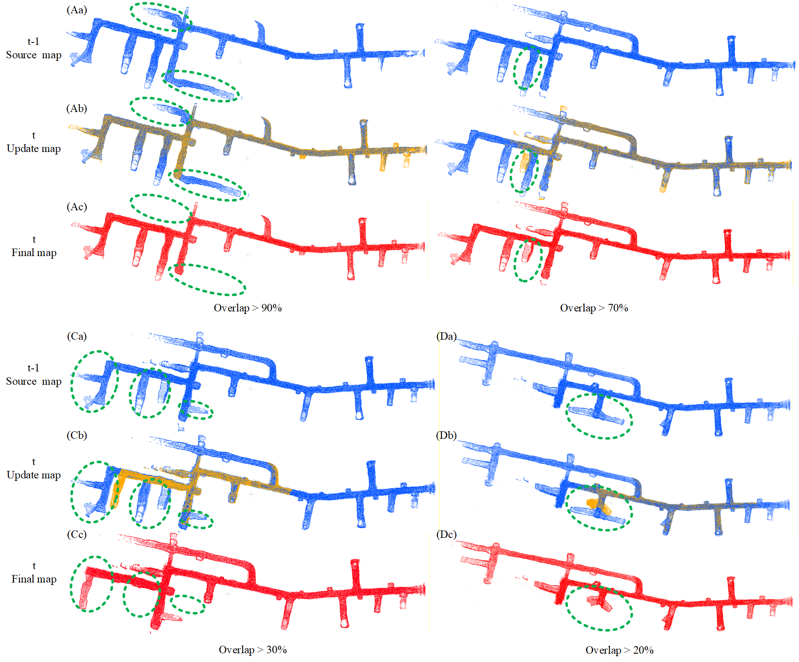
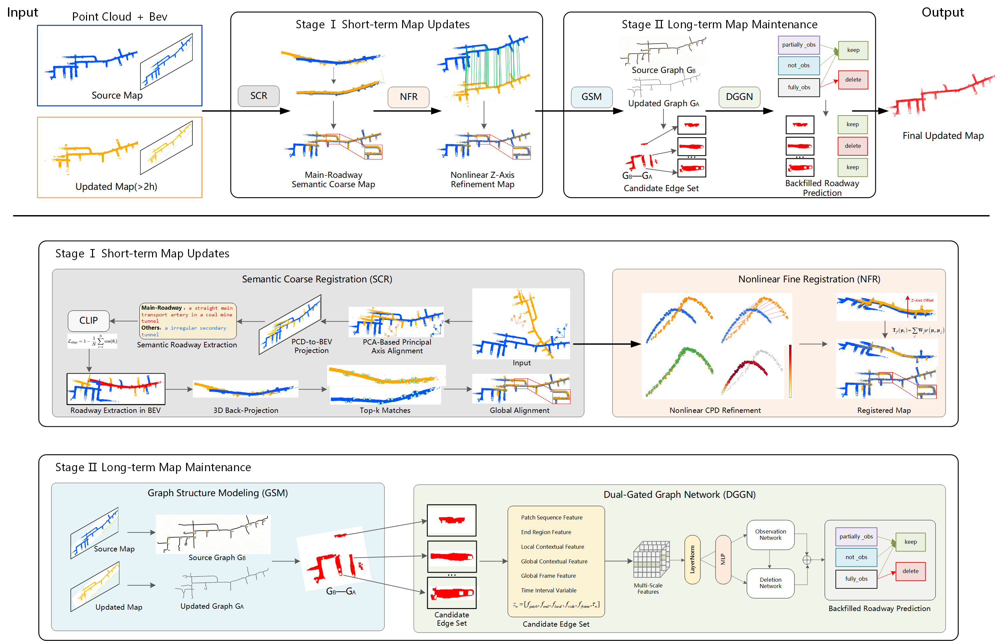
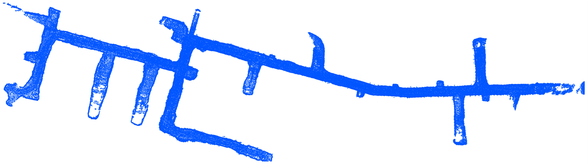
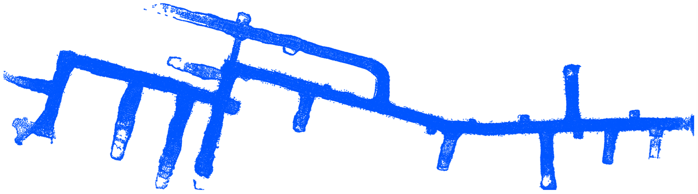
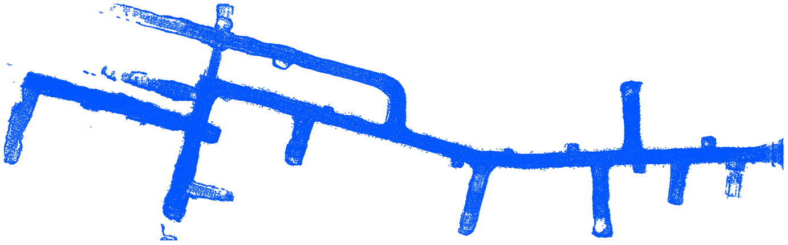
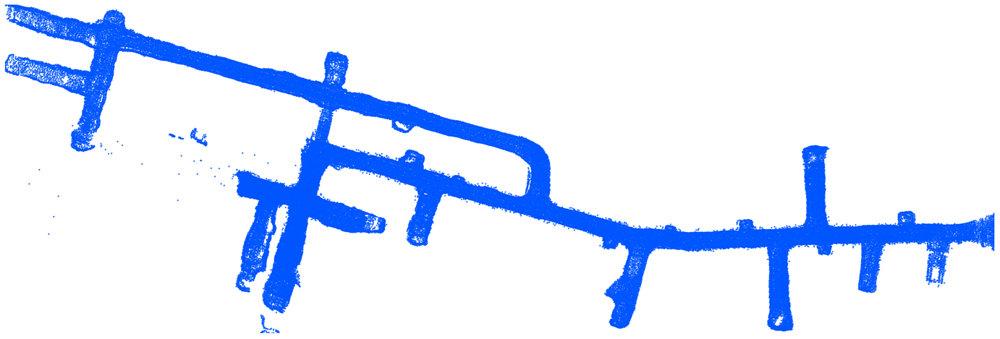
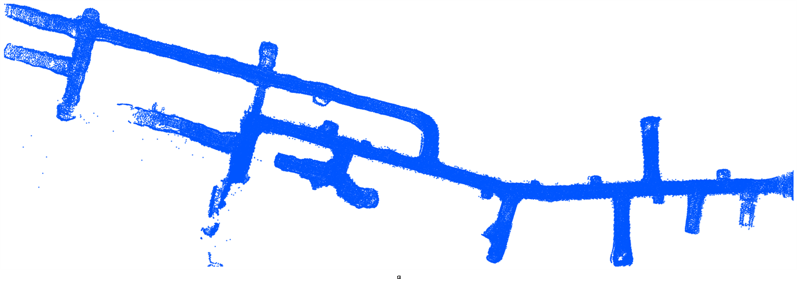
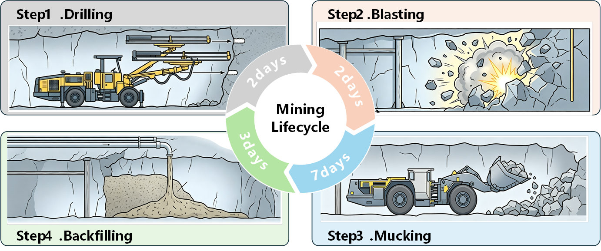
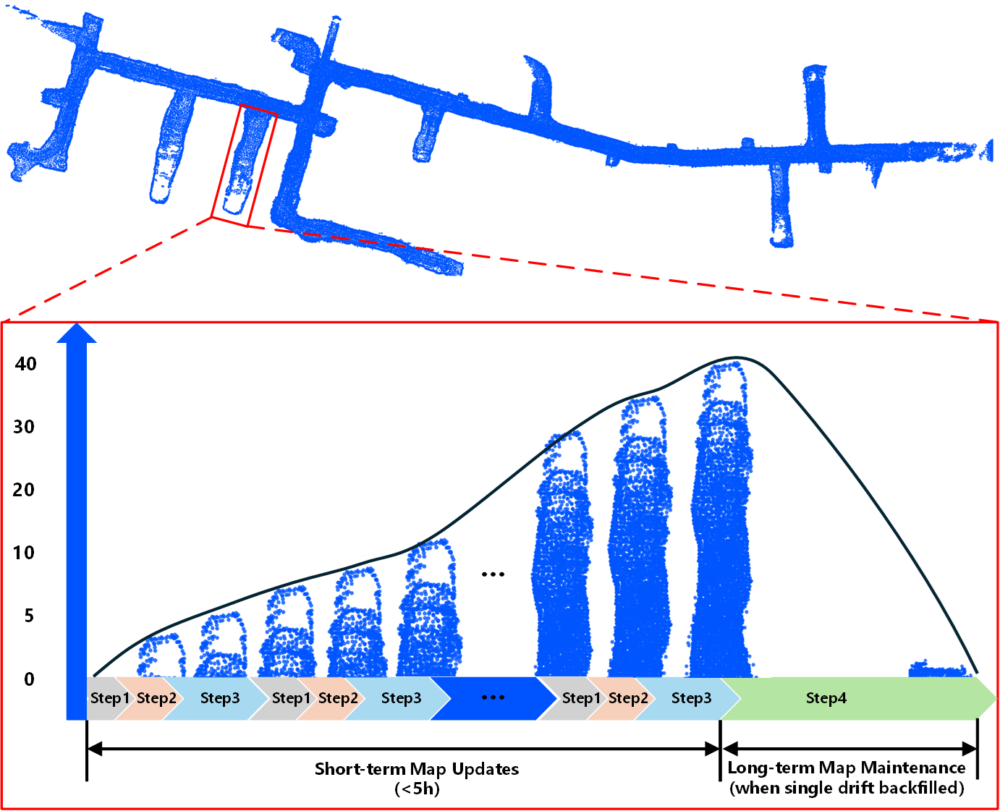

Results
Incremental map updating and backfill pruning across complex underground scenarios.


Conference / Journal
Builds, updates, and prunes the underground map in real time as mining trucks operate
— without interrupting normal production.

Underground mines lack absolute positioning (GPS), so autonomous mining trucks rely on high-precision, continuously updatable maps. Yet mine roadways are weakly textured, structurally repetitive, and geometrically sparse, making point-cloud registration prone to pose drift and misalignment; meanwhile, the cyclic “extraction-backfilling” routine continuously reshapes roadways, demanding that invalid or backfilled regions be identified and pruned over time. Existing 3D mapping methods target static or short-term environments and require production shutdowns during map acquisition. We instead propose a graph-based framework that builds, updates, and prunes the map in real time as mining trucks operate — without interrupting normal production. For short-term updates, Semantic-Guided Gaussian Registration (SGGR) achieves stable incremental mapping; for long-term maintenance, a Dual-Gated Graph Network (DGGN) detects backfilled roadways and dynamically prunes invalid regions. Experiments demonstrate significantly improved registration stability and long-term consistency in complex, dynamic mining scenarios.
The map evolves through five phases of the entire mining area’s life cycle. Slice 1 progresses from mining through backfilling to a fully backfilled state, while Slice 2 keeps developing and then begins mining — illustrating how the framework updates and prunes the map in real time.





From the cyclic underground mining workflow to a long-sequence point cloud dataset capturing the full roadway life cycle.
Underground roadways evolve continuously: while core infrastructure such as ore passes stays fixed, extraction areas expand, migrate, and are decommissioned. Multiple roadways are excavated concurrently, and each follows a roughly two-week life cycle from charging, blasting, mucking, and haulage to final backfilling — producing frequent structural additions, deformations, and disappearances in the global map.

LiDAR sensors mounted on mining trucks (load-haul-dump vehicles, drilling rigs, and scaling rigs) collect ROS bag sequences; LIO-SAM performs real-time mapping to generate discrete 3D point clouds, which are uploaded to edge servers. We construct a long-sequence dataset at the 1300 sublevel IV stope of the Jinchuan Nickel-Cobalt No. 3 Mining Area over five months.

The dataset is organized into 46 continuous 3D map sequences covering both stable areas (ore passes, main haulage roadways) and highly dynamic extraction/backfilling zones across the first and second sublevels — capturing the full roadway life cycle from initial excavation to final backfilling and closure.
Incremental map updating and backfill pruning across complex underground scenarios.

@inproceedings{dualgated2026,
title={Dual-Gated Semantic Graph Network for Life-Cycle Map Management in Underground Mines},
author={Author One and Author Two and Author Three},
booktitle={Conference / Journal (TBD)},
year={2026},
}